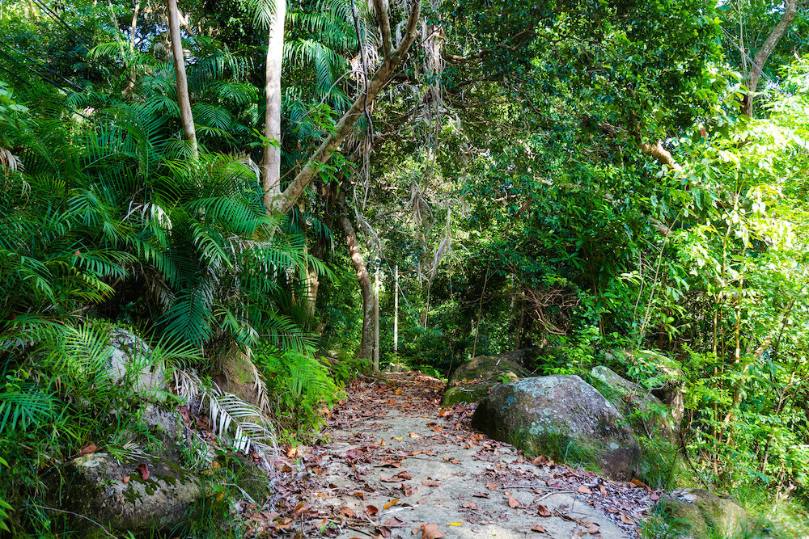

Tioman Island is a beautiful island and an island in Rompin District, Pahang, Malaysia. It is located 32 kilometres off the east coast of the state,and is some 39 kilometres long and 12 kilometres wide. It has seven villages, the largest and most populous being Kampung Tekek on the central western coast. The densely forested island is sparsely inhabited, and is surrounded by numerous coral reefs, making it a popular scuba diving, snorkelling, and surfing spot. There are many resorts and chalets for tourists around the island, which has duty-free status.
You could also go jungle trekking and explore the paths less taken in the jungles of Pulau Tioman beach resort. There are two popular tracks, one from Tekek to Monkey Bay and the other from Tekek to Juara. Trekking could take 2 hours or more, and do tread with caution as the routes are not well used. As for hiking, you could hike up the twin peaks (also known as Dragon Horns) of Gunung Nenek Semukut , which is known to be Tioman’s highest peak and Malaysia’s highest freestanding spire.